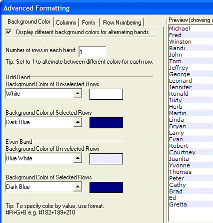
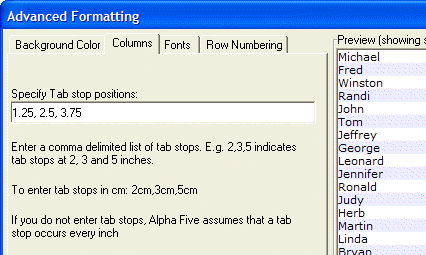
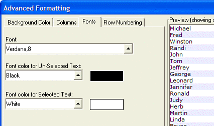
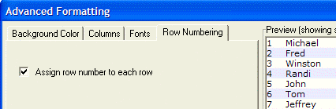

Advanced Formatting Dialog Box
Background Color Tab
Optionally change the Background Color of Un-selected Rows.
Optionally change the Background Color of Selected Rows.
Optionally check Display different background colors for alternating bands to expand the color selection lists. The choices for a non-banded display become the choices for the odds numbered bands.
Optionally change the Background Color of Un-selected Rows for the even numbered bands.
Optionally change the Background Color of Selected Rows for the even numbered bands.
Optionally change the Number of rows in each band.

Columns Tab
If you have a multi-columned display, you may specify tab positions in either inches or centimeters. Separate the entries with commas. Remember, the first column of data appears at the left edge of the column.

Fonts Tab
Optionally specify a new font or point size for the display. Either enter the font name and point size separated by a comma, or click the black triangle on the Font list to display the Select Font dialog box. Picture
{kind=link}

Row Numbering
Check Assign row number to each row if you would like row numbering.
